- 從 MacDive 遷移輸出哪個檔案，以及如何遷移而不遺失任何內容。
- 從潛水電腦下載Shearwater 和其他藍牙潛水電腦，或在 Mac 上使用傳輸線。
- Garmin Descent從手錶或 Garmin Connect 輸入 .fit 檔案。
遇到問題？請參閱疑難排解。Thermocline 是潛水日誌：它顯示你的潛水電腦記錄的內容，從不計算減壓。
取得 App
Thermocline 僅適用於 Apple 裝置：iPhone、iPad、Mac 和 Apple Watch。測試期間透過 Apple 的 TestFlight App 安裝。
| 任務 | iPhone 和 iPad | Mac |
|---|---|---|
| 加入測試版 | 加入測試版：一個連結適用於 iPhone、iPad、Mac 和 Apple Watch。在每台裝置上打開它，然後從 TestFlight 安裝。Apple Watch App 隨 iPhone App 一起提供。所有裝置都透過 iCloud 共享同一本潛水日誌。 | |
| 在 2026年11月18日之前加入了 iPhone 測試版 | 那個 App 已經遷移。請參閱從舊的 iPhone App 遷移。 | |
| 保持最新 | TestFlight 提供新版本時，請更新你使用的每台裝置。較舊的版本在更新之前會停止傳送變更，並會提示這一點。不會遺失任何內容。 | |
首次啟動和導覽
首次啟動時會詢問你的名字、你的單位以及你的潛水來自哪裡。單位以公制儲存；變更單位只會改變顯示方式。
| 任務 | iPhone 和 iPad | Mac |
|---|---|---|
| 設定 | 個人檔案標籤頁 | Thermocline → 設定 |
| 導覽 | 個人檔案 → 說明 → 顯示導覽 | 說明 → 參加導覽 |
導覽會使用範例潛水日誌（而非你的潛水日誌）帶你瀏覽每個畫面。
本頁的截圖顯示的是導覽中的範例潛水日誌：其中的潛水和潛點都是虛構的。點一下截圖可查看大圖。

帶上你的潛水日誌
Thermocline 可以讀取 MacDive（其檔案夾、XML 或 UDDF）、Shearwater Cloud 資料庫、Garmin .fit 檔案、來自任何潛水日誌的 UDDF，以及 CSV。你可以選擇要加入哪些潛水，無法讀取的內容都會列出，絕不會悄悄丟棄。
| 任務 | iPhone 和 iPad | Mac |
|---|---|---|
| 輸入檔案 | 個人檔案 → 你的資料 → 輸入潛水日誌檔案，然後從 iCloud雲碟或「檔案」中選擇。 | 「檔案」選單中的輸入命令（⇧⌘I）。 |
| Garmin .fit 檔案 | 一次選擇多個。 | 選擇多個，或整個檔案夾。 |
| MacDive 的檔案夾，含照片 | 僅限 Mac。之後再用 Mac App 把照片輸入。 | 檔案 → 從 MacDive 輸入⋯，然後選擇 MacDive 的檔案夾：潛水、潛水照片和證照卡照片。MacDive 的檔案不會被變更。 |
| 選擇潛水 | 取消勾選你不需要的潛水，然後點一下輸入。 | |
| 還原輸入 | 還原點輸入之前，在任何包含多次潛水的輸入之前都會儲存。 | 輸入報告中的還原輸入⋯，或同一個還原點。 |
輸入完成後，報告會顯示加入了多少次潛水、哪些項目未輸入及其原因，以及需要檢查的內容。檔案中沒有氣體資訊的潛水會在待確認中等待。
選擇哪個 MacDive 檔案
MacDive 可以提供它的 XML、它的 UDDF，或者（在 Mac 上）它的整個檔案夾。它們包含的內容並不相同：
| 包含的內容 | MacDive XML | MacDive UDDF | MacDive 檔案夾（Mac） |
|---|---|---|---|
| 潛水、潛點、潛伴、氣體 | 是 | 是 | 是 |
| 氣瓶容量 | 是 | 否：它的容量不是水容積，因此留空 | 是 |
| 潛水曲線 | 每次潛水 | 每次潛水 | 除 MacDive 在 iPhone 或 iPad 上下載的潛水以外的全部潛水，那些潛水由它加密儲存 |
| 潛水過程中潛水電腦的 NDL 和 ppO₂ | 是 | 否 | 是，加密的潛水除外 |
| 潛水電腦的 CNS | 是 | 否 | 是 |
| 裝備、標籤和潛水類型 | 是 | 否 | 是 |
| 潛水照片和證照卡照片 | 否 | 否 | 是 |
| 任務 | iPhone 和 iPad | Mac |
|---|---|---|
| 最佳方式 | 從 MacDive 將你的潛水輸出為 XML，把檔案儲存到 iCloud雲碟，然後輸入。 | 輸入 MacDive 的檔案夾，然後在其上輸入 XML。XML 會補齊那些加密潛水的曲線、NDL 和 ppO₂。 |
| 已經輸入了 UDDF | 也輸入 XML。已在你潛水日誌中的潛水會被比對，不會重複加入，只會補齊缺少的內容，包括氣瓶容量。你輸入或修正過的內容都不會被變更。 | |
Garmin Descent 手錶
Garmin Descent 每次潛水儲存一個 .fit 檔案。有兩種方式取得：
- 從手錶取得：用傳輸線把手錶連接到 Mac，打開 GARMIN → Activity 檔案夾。在 Mac 上可以輸入整個 GARMIN 檔案夾；不是潛水的檔案（例如跑步和設定）會被略過。
- 從 Garmin Connect 取得：打開該潛水並選擇 匯出原始檔案。這會得到一個 .zip 檔案：先解壓縮，然後輸入其中的 .fit 檔案。
位置來自手錶的 GPS。放流潛水時，手錶會把你出水的位置存為起點；輸入時會找到你實際入水的位置，因此潛水會比對到那個潛點。途經的其他沉船可以加入到備註中。

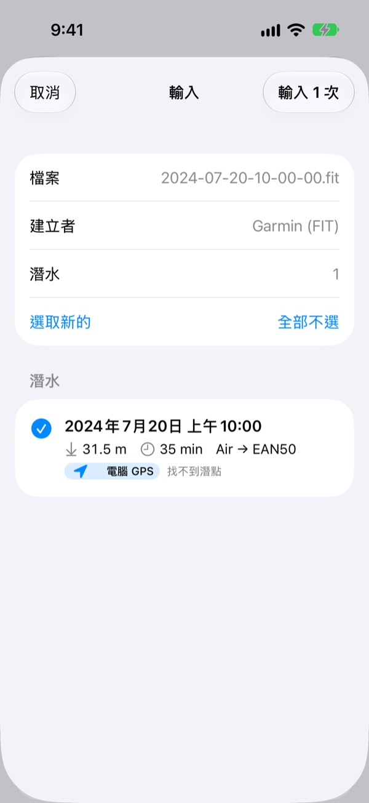
從潛水電腦下載潛水
先讓潛水電腦進入藍牙模式。在 Shearwater 上：Menu → Bluetooth。它會在該模式下保持大約兩分鐘。只會取得比你上次下載更新的潛水。
| 任務 | iPhone 和 iPad | Mac |
|---|---|---|
| 打開 | 潛水日誌 → 下載潛水 | 檔案 → 從潛水電腦下載⋯（⇧⌘D） |
| 連接 | 藍牙。在附近下選擇你的潛水電腦；首次連接時，輸入其螢幕上顯示的 PIN 碼。 | 選擇藍牙或USB 傳輸線。使用傳輸線時，選擇你的潛水電腦型號及其連接埠，並按照開始之前操作。 |
| 完成 | 取消勾選你不需要的潛水，然後點一下保留。未勾選的潛水會留在潛水電腦上，下次會再次提供。 | 下載。 |
時鐘問題。每台潛水電腦的首次下載都會詢問潛水電腦的時鐘設定為哪個時區？大多數潛水電腦記錄的是不含時區的當地時間，因此這能讓你在旅行時保持潛水時間正確。答案會為該潛水電腦記住。
選擇潛水後，你可以逐一查看，設定潛點和氣體，也可以選擇稍後完成：它們會在待確認中等待。
刪除了一次潛水，想找回來？開啟下載電腦上的每一次潛水。這會花更長時間；已在你潛水日誌中的潛水會被略過。

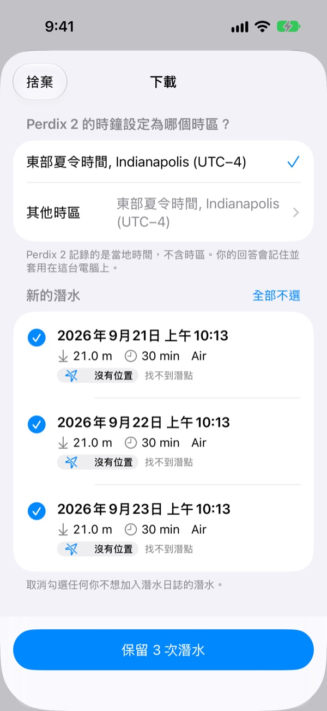
Shearwater Predator 和 Petrel 1
它們使用 iPhone 和 iPad 無法使用的較早藍牙（經典藍牙）。在 Mac 上，先在系統設定 → 藍牙中配對潛水電腦，然後在下載視窗中選擇USB 傳輸線：它的連接埠可能會出現在清單中。讓潛水電腦進入藍牙上傳模式，然後選擇「下載」。這還沒有在真實的 Predator 或 Petrel 1 上試過，所以無論成功與否，都請傳送下載記錄。在 iPhone 上，請改為從 Shearwater Cloud 或 UDDF 檔案輸入它們的潛水。
支援的電腦
Thermocline 使用 libdivecomputer 下載，這是許多潛水日誌共用的開源程式庫。它支援大多數製造商的數百種型號。要查看你的型號，請打開下載畫面並選擇支援的電腦；每一款都會註明是可在 iPhone 和 iPad 上使用，還是需要 Mac。
| 連接方式 | 適用裝置 | 目前已試過 |
|---|---|---|
| 低功耗藍牙 | iPhone、iPad 和 Mac | Shearwater Perdix 和 Perdix 2。其他型號應該也能使用：請告訴我們。 |
| USB 或序列埠傳輸線 | 僅限 Mac | 已完成開發，尚未在真實硬體上試過。 |
| 經典藍牙（Predator、Petrel 1 和其他較早型號） | 僅限 Mac，作為序列埠配對（方法） | 尚未試過。 |
| Garmin Descent（.fit 檔案） | 在 iPhone、iPad 和 Mac 上輸入（方法） | Descent 的潛水，包括放流潛水。 |
有我們還沒試過的潛水電腦？幫我們測試。
確認潛點和氣體
仍缺少潛點或尚未確認氣體的潛水會在待確認中等待。這不會妨礙它們儲存；你可以隨時補填。
| 任務 | iPhone 和 iPad | Mac |
|---|---|---|
| 找到它們 | 在潛水日誌頂部的待確認下。 | 前往 → 待確認（⌘2） |
| 確認 | 打開一次潛水，然後選擇潛點並點一下是，這些氣體正確（或修正氣體⋯）。 | 每次潛水上的橫幅會提供確認潛點和氣體⋯、選擇潛點⋯或確認氣體⋯。 |
Thermocline 根據潛水的位置推薦潛點：先是你自己的潛點，然後是內建清單中超過 76,000 個潛點和沉船，這些清單可離線使用。

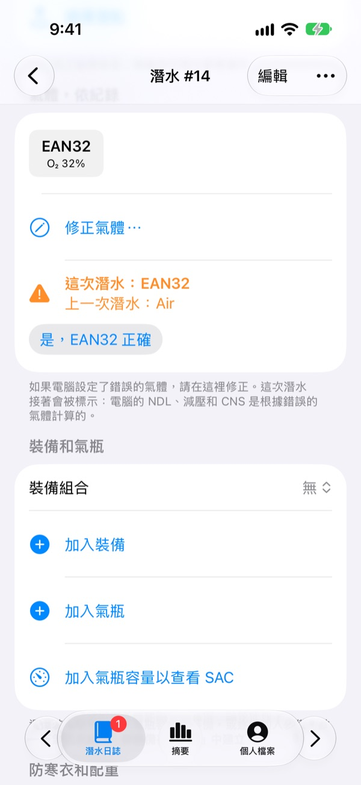
閱讀一次潛水
| 任務 | iPhone 和 iPad | Mac |
|---|---|---|
| 讀取任意時刻 | 在圖表上拖移。 | 指向圖表。 |
| 手動記錄潛水 | 潛水日誌 → 手動記錄 | ⌘N |
- 安全數值固定在每次潛水頂部的一欄中，始終在同一位置。
- 潛水曲線：圖表下方的標籤可顯示或隱藏氣瓶、ppO₂、NDL、SAC、水溫、CNS 和上升，以堆疊分欄或單張疊加圖的方式。只有潛水記錄過的資料才會有標籤。NDL 是潛水電腦自己的數值，在減壓期間停止，此時紅色區段表示減壓停留。在較窄的 iPhone 上，標籤保持在一行，可左右捲動。在首頁上試一試。
- 循環呼吸器：對於任何記錄了相關資料的潛水電腦或檔案，ppO₂ 分欄會顯示設定點以及表決後的 ppO₂（如有記錄，還有每個感測器的數值），讀數會給出該時刻的設定點。從稀釋氣切換到任何其他氣體都會標記為備援氣體（bailout）。
- 氣體消耗：點一下或按一下 SAC 數字旁邊的怎麼算？查看每一項輸入：氣瓶、其水容積、壓力、溫度和真實氣體修正。
- 編輯：任何潛水都可以編輯。修正會保留潛水電腦的原始讀數。
- 配重：第一次點一下 + 會設為無配重，用於沒有佩戴配重的潛水。從那裡點一下 − 即可清除。
- 備註中的連結：潛水備註中的網頁連結可以點一下或按一下。輸入完成後，點一下鍵盤上方的完成：連結隨即顯示，YouTube 或 Vimeo 連結會在備註下方出現一個將 … 加入影片連結按鈕。要再次在備註中輸入，請選擇編輯備註。

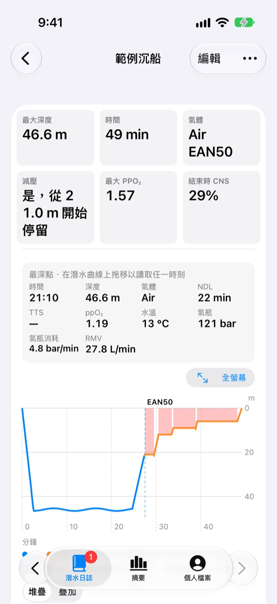

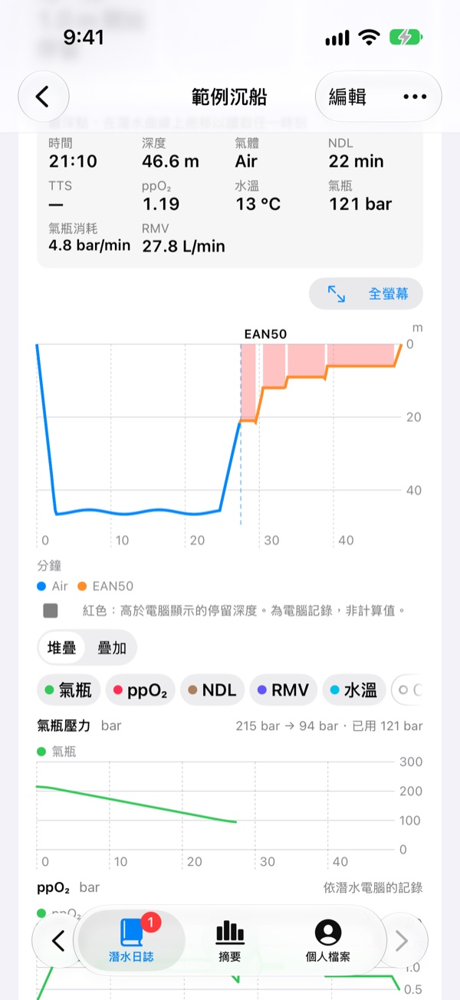

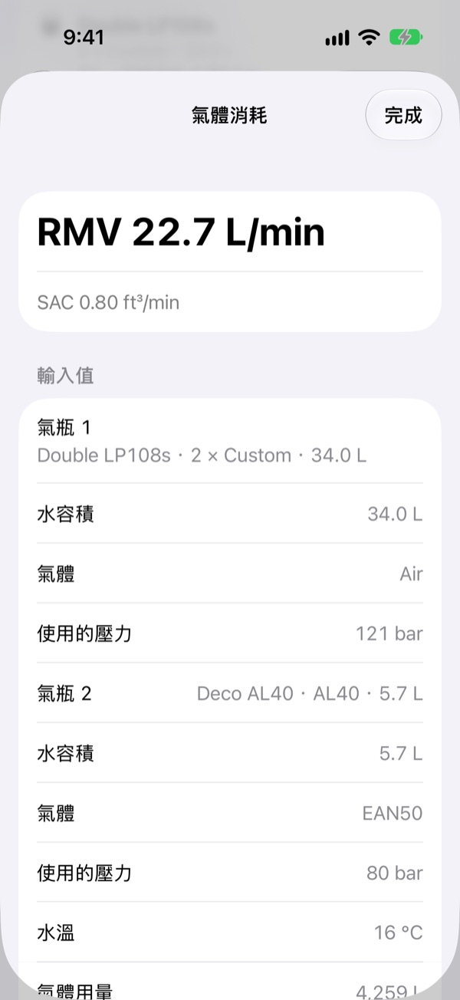

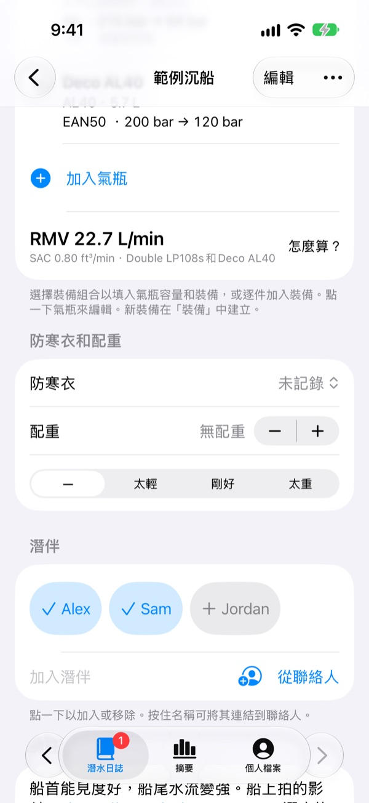

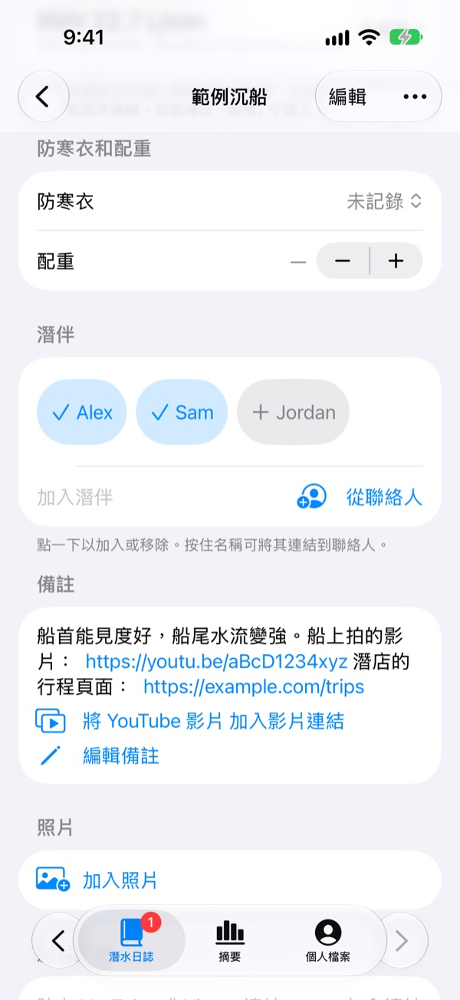

潛點、位置和 Apple Watch
| 任務 | iPhone 和 iPad | Mac |
|---|---|---|
| 加入潛點 | 個人檔案 → 潛點，然後點一下加入按鈕：尋找或命名潛點或在這裡標記地點（GPS）。 | 前往 → 潛點（⌘4），然後加入潛點⋯ |
| 查看所有列出的潛點 | 個人檔案 → 潛點 → 地圖，然後點一下地球按鈕，或一直捏合縮小。沉船為橙色，礁石和潛點為藍色，你自己的潛點為紅色旗幟。 | 潛點，然後按一下工具列中的顯示地球儀，或一直縮小。 |
| 尋找位置 | 沒有位置的潛點會提供尋找位置：在地圖上核對推薦位置、輸入座標，或放置大頭針。 | 尋找位置⋯會逐一處理每個沒有位置的潛點。 |
Apple Watch：在水面標記地點，它會在你的 iPhone 上的「待確認」中等待。請參閱Apple Watch。
潛點位置用於記錄，不用於導航。

Apple Watch
手錶 App 只做一件事：在水面標記你所在的位置，讓潛水的潛點易於記錄。它不記錄潛水；潛水來自你的潛水電腦。它需要 watchOS 11 或更高版本，以及一台裝有 Thermocline 的 iPhone。
| 任務 | Apple Watch | iPhone |
|---|---|---|
| 安裝 | 它隨 iPhone App 一起提供。如果手錶上沒有，請打開 iPhone 上的 Apple Watch App，在可用App下找到 Thermocline，然後點一下安裝。首次使用時，請在手錶上允許 Thermocline 使用位置。 | |
| 標記地點 | 在水面上、潛點上方，打開 Thermocline。等到顯示定位良好，然後點一下標記地點。儲存後，手錶會輕觸你的手腕。 | 位置會自動送達。如果 iPhone 不在範圍內，會在兩者再次靠近時傳送。 |
| 命名 | 可選。標記後點一下加入名稱，或之後在已標記的地點中操作，然後說出、手寫或輸入名稱，例如「沉船船首」。完成後即會儲存。 | 該名稱會作為新潛點的名稱提供。你可以使用它，也可以選擇其他潛點。 |
| 確認 | 無需在手錶上操作。 | 潛水日誌 → 待確認。iPhone 連網時會查詢該位置，推薦最近的已知潛點，並顯示它最可能屬於的那次潛水。確認或放棄它。 |
| 檢查是否已傳送 | 已標記的地點會顯示每個位置是已傳送到 iPhone還是等待傳送到 iPhone，並附有地圖。位置在 iPhone 上被確認或放棄後，就會從手錶上移除。 | 確認後，該潛點會像其他潛點一樣同步到你的其他裝置。 |

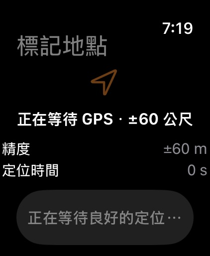

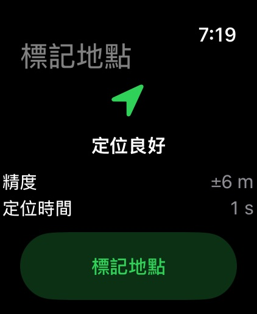

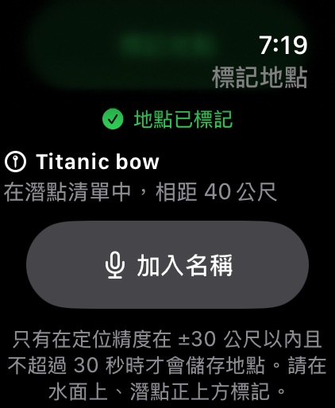

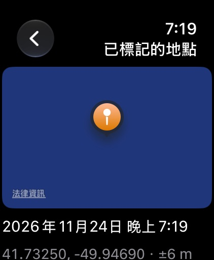
手錶只會根據誤差在 ±30 m 以內、且在最近 30 秒內取得的定位儲存位置，並會忽略舊的快取位置。請在水面標記，不要在水下標記。
潛點位置用於記錄，不用於導航。
裝備和氣瓶
| 任務 | iPhone 和 iPad | Mac |
|---|---|---|
| 打開裝備 | 個人檔案 → 裝備 | 前往 → 裝備 |
- 在氣瓶上，型號會打開氣瓶目錄：依製造商或型號搜尋（例如「PST LP104」）以填入其公布的容量，或輸入你自己的數字。
- 雙瓶請勾選雙瓶（以分歧閥連接）。
- 刻有 + 的鋼瓶：在最近一次水壓測試保留了 + 的情況下，開啟「+」標記。它會顯示為例如 2400+。此開關在氣瓶容量以立方英尺顯示時出現。
- 每次潛水的氣瓶位於該潛水的氣體部分（加入氣瓶、裝備組合）。
合併和接合潛水
- 合併用於由兩台潛水電腦記錄的同一次潛水。兩份記錄都會保留，你可以在圖表上切換。
- 接合用於因短暫出水而被分成兩段的同一次潛水。
- Thermocline 絕不會自行執行其中任何一項操作。當它發現可能成對的潛水時，潛水日誌頂部的橫幅會提供檢視。
| 任務 | iPhone 和 iPad | Mac |
|---|---|---|
| 自己操作 | 點一下選取，選擇兩次潛水，然後點一下合併或接合。 | 選擇兩次潛水並按右鍵：合併這些潛水⋯或接合這些潛水⋯ |
| 改變主意 | 立即還原，或隨時在該潛水上選擇拆分這些潛水。 | |
照片和影片連結
- 在潛水上點一下加入照片會把照片從你的圖庫拷貝到潛水日誌中。
- 要節省 iCloud 空間，請在每台裝置上開啟同步 → 節省潛水照片佔用的 iCloud 儲存空間。之後照片會連結到 iCloud照片而不是拷貝，還可以加入圖庫中的影片。Thermocline 只在你開啟此選項時才請求取用照片。
- 影片連結：在潛水的照片下方貼上 YouTube 或 Vimeo 連結。只保留連結。備註中已有的連結可以從那裡加入（請參閱閱讀一次潛水）。
- 同一個影片用於多次潛水：選擇這些潛水（在 iPhone 上，先點一下「選取」），選擇編輯 … 次潛水⋯，然後在影片連結下加入連結。它會加入到每次所選潛水中，它們已有的連結也會保留。
摘要和呼吸
摘要標籤頁（在 Mac 上為側邊欄中的「摘要」）統計你的潛水日誌：每年和每月的潛水次數、深度、氣體、紀錄、你在哪裡潛水，以及你最常用的潛點和潛伴。在頂部選擇一個範圍（例如一年），然後點一下任意數字或長條，查看其背後的潛水。
- 呼吸顯示該範圍內所有具有氣瓶容量以及起始和結束壓力的潛水的 SAC 和 RMV，依時間和深度加權。點一下它可查看哪些潛水被計入。
- 有些輸入的潛水沒有氣瓶容量，因此「呼吸」一開始可能是空的（請參閱選擇哪個 MacDive 檔案）。在你的潛水上設定氣瓶，無論是在「裝備」中還是在每次潛水上，它就會填入資料。

與 iCloud 同步
| 任務 | iPhone 和 iPad | Mac |
|---|---|---|
| 開啟同步 | 個人檔案 → 同步 | Thermocline → 設定 → 同步 |
之後，所有登入同一個 Apple帳號的裝置都會共享一本潛水日誌，儲存在你自己的私人 iCloud 中。離線時所做的變更會在裝置上等待，並在恢復連網時傳送。
「同步」部分會顯示狀態、所有等待傳送的內容，以及此裝置與你的其他裝置是否一致。立即同步會馬上檢查。

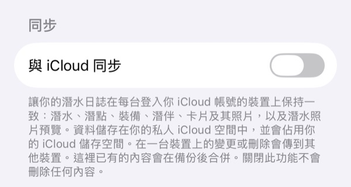
輸出、還原點和清除
| 任務 | iPhone 和 iPad | Mac |
|---|---|---|
| 輸出 | 個人檔案 → 你的資料 | 「檔案」選單 |
| 還原點 | 個人檔案 → 你的資料 → 還原點 | 設定 → 你的資料 → 還原點 |
- 輸出：UDDF 是完整的輸出格式，也是你遷移到任何潛水日誌的途徑。還可以輸出：試算表（CSV）、MacDive XML、洞穴測繪書籤（CSV），以及用於課程先決條件的經驗摘要（文字）。
- 還原點：在開啟同步之前、大量輸入之前、合併、接合、清除之前，以及刪除任何內容之前，都會儲存一個還原點。還原時會先把你當前的潛水日誌儲存為還原點，因此你可以還原。
- 清除：清除潛水日誌⋯會先提供輸出選項。開啟同步時，你的其他裝置也會隨之清除。

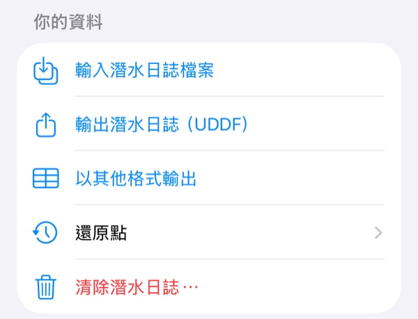
仍有問題？
請參閱疑難排解，或從 TestFlight 傳送意見回饋，或傳送至 brian@616labs.net。